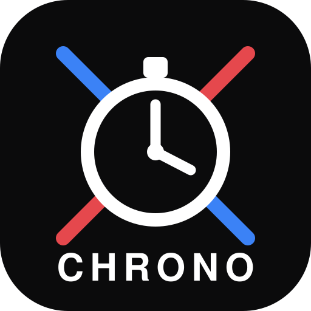

Mots courts entendus qui n'ont déclenché aucune commande. Touchez la commande voulue pour que l'app les reconnaisse ensuite.

Le chronomètre de l'aire de combat, piloté par la voix de l'arbitre.
Retard d'un tireur ou d'un second à l'appel de l'assaut : 1 pénalité dès le constat, puis 1 par minute de retard ; disqualification à la fin de la 3ème minute.